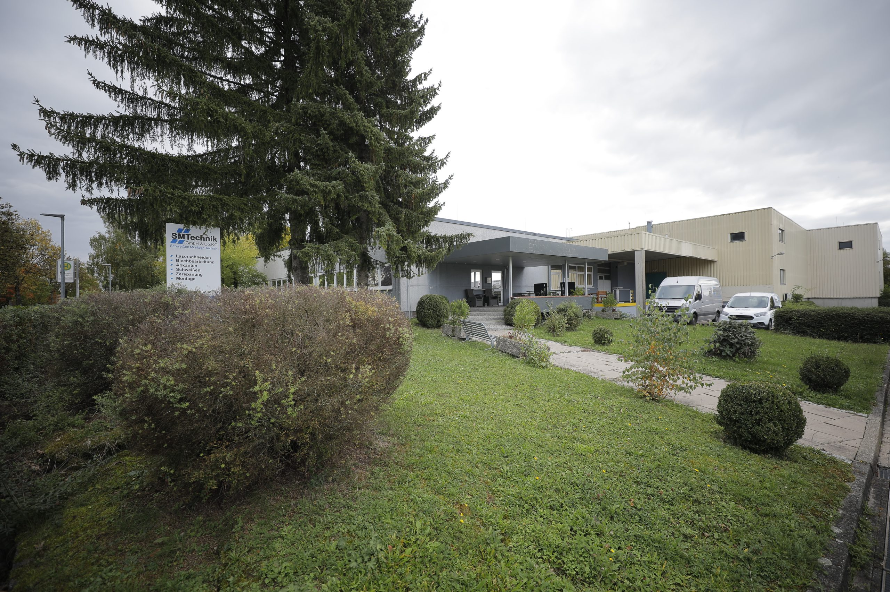

METALL.
MIT PRÄZISION.
Von der ersten Idee bis zum fertigen Bauteil. Wir verbinden modernes Fertigen mit dem Wissen aus drei Generationen.
Ihr Partner seit 2016.
Schwäbisch Hall
Ihre Idee.
Unser Handwerk.
Ein starkes Ergebnis.
2016 von Alex Kremer gegründet, steht SMTechnik für individuelle Lösungen in der Metallbearbeitung. Zehn Spezialisten begleiten Ihre Projekte mit moderner CAD-Software und einem vielseitigen Maschinenpark.
Wir denken mit, konstruieren und fertigen. Als Partner und Problemlöser verbinden wir handwerkliche Erfahrung mit moderner Technologie — für eine wirtschaftliche Umsetzung Ihrer Anforderungen.
Von der Zeichnung
bis zur Montage.
Wir bearbeiten Metall. Und denken Ihr Projekt von Anfang an mit.
Alle Leistungen entdecken01
Konstruktion & Programmierung
Programmierung und Konstruktion für den Sondermaschinenbau. Individuelle Sonderteile nach Ihren Anforderungen.

02
Laserschneiden
Konturen aus Stahl, Edelstahl und Aluminium — gefertigt mit Laserschneidanlagen von TRUMPF.
03
Rohr-Laserbearbeitung
Flexible Bearbeitung von Rohren und Profilen mit der TRUMPF TC L 3030 RotoLas.
04
Abkanten
Blechteile nach Ihren Vorgaben in Form bringen. Mit Abkantpressen von TRUMPF und EHT.
05
Laser- & Handschweißen
Laserschweißen, WIG, MIG, MAG und Bolzenschweißen. Für Edelstahl, Aluminium, Stahl und Guss.
Starke Technik.
Präzise Möglichkeiten.
TRUMPF, HURCO, EHT und KASTO. Entdecken Sie die Technik hinter Ihren Bauteilen.
Maschinen & technische DatenTRUMPF / TRULASER 3030 / LASERBEARBEITUNGQualität beginnt
im Detail.
Moderne CAD-Arbeitsplätze, erfahrene Fachkräfte und CNC-gesteuerte Fertigung. Wir setzen Ihre Anforderungen präzise und wirtschaftlich um.
Metall kann mehr.


Dein Können.
Unser Team.
Du willst Metall in Form bringen? Bei uns arbeitest du in einem familiären Team mit kurzen Wegen und direkter Kommunikation.